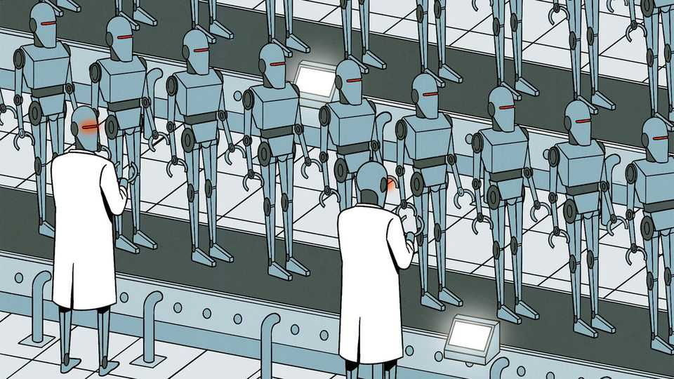

With an eye on America, China is beefing up its AI-controlled labs
By automating scientific research it hopes to strengthen its industrial muscle

Nov 5th 2026
In a laboratory in Shenzhen, a city in southern China, hundreds of mechanical limbs dance alongside each other in search of scientific discoveries. Few humans are involved. Instead the machines are directed by artificial intelligence. An AI model devises a hypothesis, instructs robots to test it and records the results to improve its next experiment. The autonomous facility, which is owned by a drug-discovery firm called XtalPi, runs around the clock to discover new medicines. During a visit early this year, China’s prime minister, Li Qiang, gushed that innovation like this was “the key to winning the future”.
If China is to win, the loser would presumably be America. Both countries are competing to build and apply AI technologies as fast as possible. Scientific discovery may be the most important arena for this race: inventions can improve lives as well as boost a country’s economic and military power. In March China’s new five-year plan called for faster exploration of AI-driven ways of doing science as part of a broader push to “seize the commanding heights in the industrial application of AI”.
As often in industry, the government is heavily involved. It is building what it calls an AI-for-science “stack” by linking the specialised datasets, models and computing power that are needed by firms to run autonomous labs. Experts hope these “self-driving” facilities will make research faster, cheaper and far more productive. China’s labs are unlikely, for now, to produce big scientific breakthroughs. But they could supercharge Chinese manufacturing. Officials say they will reduce dependence on Western technology. They also hope these efforts will give China an edge in the AI race. America should pay attention.
Stacks like this have two layers. The first is the brains. In April the Chinese Academy of Sciences launched a platform, often dubbed an “AI scientist”, that is available to hundreds of universities and laboratories in China. It is called ScienceOne (the Chinese name is Panshi, meaning “Bedrock”) and resembles a chatbot. It includes models, or agents, trained on academic reports and non-text data, such as waveforms used to measure seismic vibrations. They can perform hundreds of tasks, like working out the sequences of amino acids in proteins, state media say. China’s scientific models still tend to lag behind America’s. But a researcher at the University of Hong Kong who uses ScienceOne praises its bundle of scientific datasets, AI agents and computing power. “I don’t see anything like it in the US,” he says.
The second layer is the brawn. Advances in applied science need hands-on experiments. Robotised labs have existed for decades, but they require humans to analyse data and refine experiments. AI models can take over the drudgery. They can learn from the results in real time and continuously tweak their approach. Last year XtalPi used its autonomous lab in the discovery of a molecule that could be used for treating a form of stomach cancer that grows in scattered clusters of cells. The firm generated millions of possible molecules and whittled them down to hundreds of candidates before testing the remaining ones on lab-grown tissue, using robots.
China is watching America closely. It stepped up its stack-building after President Donald Trump unveiled a similar plan late last year: the “Genesis Mission”. This also involves the government-led creation of AI platforms to test scientific hypotheses and automate experiments. Many AI researchers believe that labs full of non-human AI scientists could one day churn out everything from cancer cures to hitherto intractable proofs in physics. “This is one area where Chinese policymakers see eye-to-eye with the American AI labs,” says Kyle Chan of the Brookings Institution, an American think-tank.
Both countries have good reasons to involve the state. AI scientists need to be trained on large sets of data such as weather patterns and the results of past experiments. Governments, through national laboratories, are often the biggest keepers of such data. They are also well-placed to provide researchers with access to advanced computing power.
But there are differences between automated labs in America and China. In America they have been showered with venture capital: about $1bn of it last year. Recipients have mainly been startups offering speculative, eye-catching research, such as in the creation of room-temperature superconductors. Dreaming big helps them raise money, says Charles Yang, formerly of Renaissance Philanthropy, a charity that helps donors fund scientific research. In China, firms with automated labs are usually less ambitious. They like research that can quickly generate profit.
China’s use of AI in scientific research is often factory-like. XtalPi’s labs “work 24/7 and the basic cost [once they are up and running] is electricity,” says Shi Xuekun, one of the firm’s managers. The company now serves 17 of the world’s 20 largest pharmaceutical companies. China’s biomedical industry is growing fast: last year about half of all drugs licensed globally, by value, were from China, according to Goldman Sachs, a bank—up from 21% in 2024. Smart labs are likely to account for a growing share. In March Eli Lilly secured rights to develop and sell potential drugs from Insilico Medicine, a Hong Kong-listed firm that uses automated labs. The deal could be worth up to $2.75bn.
Makers of industrial materials are also likely to benefit. China is a powerhouse in materials science, publishing four times as many papers in the field as America, according to Nature, a journal. In April researchers at City University of Hong Kong showed how an automated lab could design and test molecules for light-absorbing solar cells. Robots could make the cells just as well as humans, and with far more consistency in their output. At present the average human researcher in a lab might produce one or two new cell-prototypes daily. In a joint venture with JinkoSolar, an industry titan, XtalPi says that it is building an automated facility that will test 1,000 a day.
AI experts differ over the steps needed to create “artificial general intelligence” (AGI)—in essence, AI on steroids. Some of China’s AI stars including Zhou Bowen, the boss of Shanghai AI Lab, a government-backed institute, believe models must first master sciences, and that automated labs will help them do so. Mr Shi hopes that’s right: smarter models could predict the results of the experiments they design, he says. Forget humans. He may then need fewer robots, too. ■
Subscribers can sign up to Drum Tower, our new weekly newsletter, to understand what the world makes of China—and what China makes of the world.